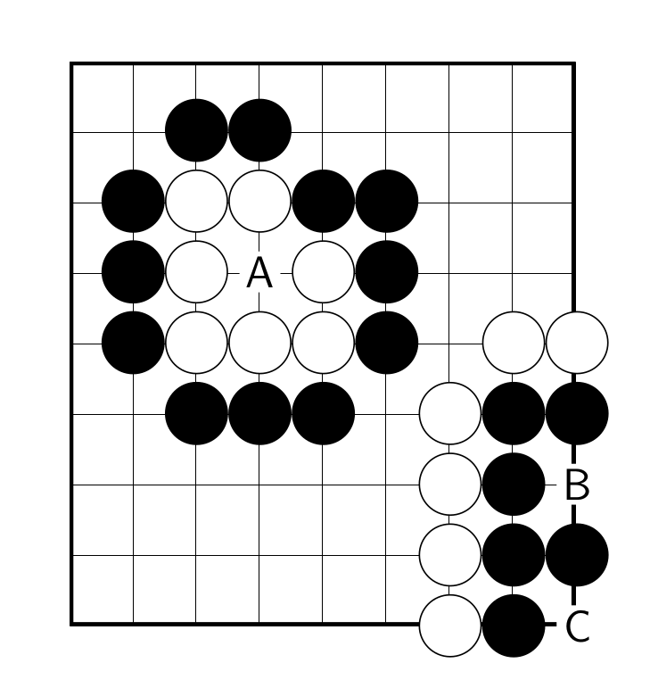
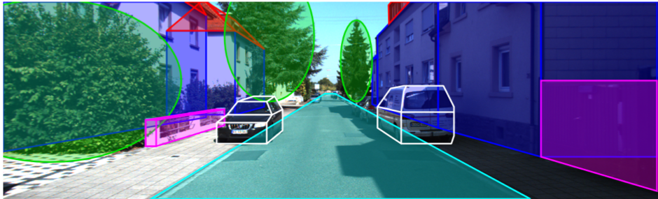
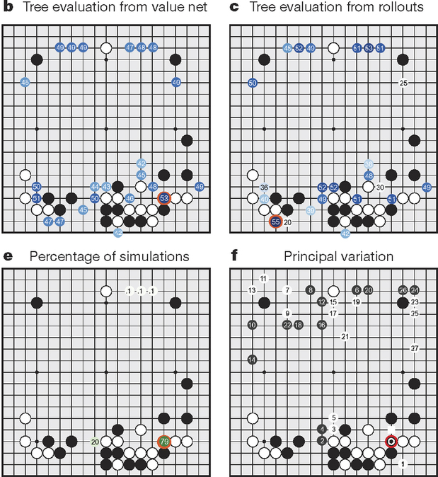
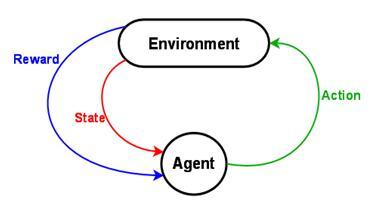

AlphaGo: Solving Go with Machine Learning
On March, 29
By Hugo Mougard
DeepMind's Nature paper about AlphaGo introduced the first AI to ever beat a human pro at Go without free moves.
Overview
- The Game of Go
- Previous Go AIs
- Convolutional Neural Networks
- AlphaGo
- Conclusion
The Game of Go
A Simple Ruleset
There are 2 important rules:
- stones surrounded by enemy stones are captured
- empty intersections surrounded by your stones are your territory
The Game of Go
Capture
The Game of Go
Territory

The Game of Go
A Complex Game
Despite its very simple rules, Go is very hard to master:
- Average number of possible moves at each turn: 200
- Average number of moves in a game: 300
- Number of legal positions: estimated number of atoms in the observable universe squared
Overview
- The Game of Go
- Previous Go AIs
- Convolutional Neural Networks
- AlphaGo
- Conclusion
Previous Go AIs
Prerequisite: Game Tree

Previous Go AIs
Objective of a game AI
Explore the game tree efficiently to find the best move.
Previous Go AIs
Min-Max
Maximize your minimum score:

Previous Go AIs
Min-Max applicable to Go?
- Average number of possible moves at each turn: 200
- Average number of moves in a game: 300
→ 200300 moves to explore
Previous Go AIs
Monte Carlo Tree Search
Converges to Min-Max in the limit.

Overview
- The Game of Go
- Previous Go AIs
- Convolutional Neural Networks
- AlphaGo
- Conclusion
Convolutional Neural Networks
A taste of what's coming
Models capable of image and text understanding:
Convolutional Neural Networks
Introduction
Approximators of very complex functions, usually hard for computers, “intuitive” ones.
Following section heavily based on Stanford cs231n course
Convolutional Neural Networks
Building block:
the Neuron
Inspired by biological neurons:


Convolutional Neural Networks
An Activation Function

Convolutional Neural Networks
“Simple” Neural Nets

Convolutional Neural Networks
Representational power

Convolutional Neural Networks
Training 1/2: Principle
Solve an optimization problem: minimize a loss w.r.t. training data based on the weights of the neurons:

Convolutional Neural Networks
Training 2/2: Gradient Descent
Follow the derivative to find a local minimum of the loss:

Convolutional Neural Networks
Conv Nets: Idea
Neurons depending on small areas of the input (also called filters). Allows a hierarchical representation.
Convolutional Neural Networks
Architecture
Multiple layers of filters combined together.

Convolutional Neural Networks
Filters

Convolutional Neural Networks
Learned Filters

Convolutional Neural Networks
Application

Convolutional Neural Networks
Relation to go
Instead of working on pixels, work on intersections.

Overview
- The Game of Go
- Previous Go AIs
- Convolutional Neural Networks
- AlphaGo
- Conclusion
AlphaGo
Intro by DeepMind
AlphaGo
Core of the approach
Augment Monte Carlo Tree Search with two Convolutional Neural Networks.

AlphaGo
Policy Network
Predict the next move given the position.

AlphaGo
Value Network
Predict the winner given the position.

AlphaGo
Integration in MCTS

AlphaGo
MCTS example
AlphaGo
Supervised Learning

AlphaGo
Supervised Learning
- 29M positions from 160k KGS games
- 8M positions from Tygem games
AlphaGo
Reinforcement Learning
AlphaGo
Reinforcement Learning
- Make the policy network play against its previous versions and learn from the result of the game
- Use the new policy network to create 30M positions to learn the value network
AlphaGo
Hardware
Google scale:
- 1900+ CPUs
- 280+ GPUs
- 40+ search threads
AlphaGo
Performance
- v13 beat Fan Hui 5-0.
- v18 beat Lee Sedol 4-1.
AlphaGo
Impact on Go Community
AlphaGo already changed Go forever: new theory, new mentality, in only 5 games. Much more to come!
AlphaGo
General Impact
Alphago uses a generic learning framework → Applicable (with some/lots of efforts) to most other domains.
AlphaGo
Our new AI Overlord?
Despite what the press says, AlphaGo is not a general AI. No reason to worry (yet)!
Overview
- The Game of Go
- Previous Go AIs
- Convolutional Neural Networks
- AlphaGo
- Conclusion
Conclusion
- Yet another milestone reached for AI
- Very general techniques, applicable to many tasks